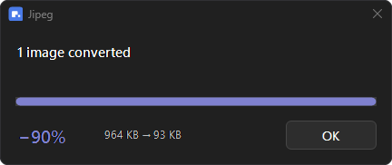

Right-click an image.
It comes back lighter.
One entry in the right-click menu, encoding with Google's jpegli. It never gives back a file heavier than the one you handed it, and it carries nothing over: no Exif, no GPS, no colour profile.
irm https://raw.githubusercontent.com/da0t-exe/Jipeg/main/install.ps1 | iex
Checked against the SHA-256 GitHub publishes for the release.
It comes off the same way, with uninstall.ps1.
Needs cjpegli, and uses oxipng and dwebp when they are
there: apt install libjxl-tools oxipng webp. Experimental, and never run by its author.
Needs cjpegli, and uses oxipng and dwebp when they are
there: brew install jpeg-xl oxipng webp. Experimental, and never run by its author.
On real files
| what you give it | before | after | |
|---|---|---|---|
| a photograph | 630 KB | 66 KB | −90% |
| a scanned document | 10 KB | 3 KB | −68% |
| a transparent logo | 1.1 KB | 0.4 KB | −62% |
| a diagram | 3.9 KB | 1.7 KB | −57% |
| a screenshot | 36 KB | 26 KB | −29% |
| a JPEG already small | 40 KB | — | untouched |
Three things it will not do
Give you back something heavier
A screenshot grew 88% here, an icon 448%. Those JPEGs are never written: the picture is shrunk losslessly instead, or handed back untouched.
Flatten transparency onto white
A picture with see-through pixels is shrunk as a PNG instead, losslessly, whichever format the transparency arrived in.
Keep what came with the file
The rotation a phone asks for is applied to the pixels and thrown away with the rest, so the picture is upright everywhere and cannot say where it was taken.
The whole interface

Linux and macOS
Tested on one machine
Twenty behaviours are checked on every change, and the window's geometry is measured rather than looked at — but all of it on one Windows 11 machine at 100% scaling. HEIC and AVIF have never been decoded here, the scaling is only simulated, the port to Linux and macOS has never been run, and no native speaker has read the nine translations. The two bugs that mattered most were found by somebody else running it.